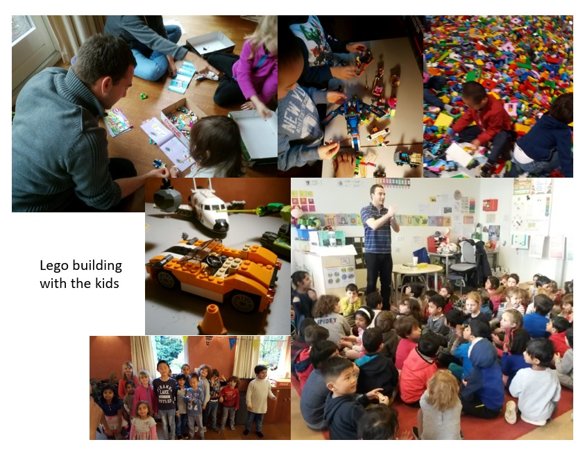

Welcome to my first blogpost!
A lot has happened since leaving Shell end September. The MBA program has started and I am almost done with my online machine learning degree from Udacity.
The MBA has been useful in a number of ways: Technically, I have learned how (SQL) databases work, got some solid grounding in statistics and econometrics and learned programming in R. As a large scale data challenge for an assignment, I have checked if any of my linkedin contacts has been involved in the Panama Papers scandal (contact me to learn more about, if I found you in there).
Further, I learned how to implement commercial (big) data projects and analyze consumer behavior, went to start-up pitches, the Benelux AI and big data conferences.
A big learning point was also the self-reflection journey (thanks Shell colleagues for the farewell feedback!). I am developing much more patience with others and myself and a more genuine interest in people's stories - there is so much to learn, if you just listen carefully.
Regarding commercial activities, I have so far engaged in little project work (prohibitive tax rates this year!), as learning is still most important until the end of 2016. I have done two small international consulting jobs, one for reactor engineering and catalysis and another for industrial automation. Further, I have been in touch with an Utrecht based start-up giving them advice on how to market their software product - it's a sustainability screening tool for chemicals R&D.
I attended a grant proposal session alongside the CEO and gave my perspective as ex-R&D coordinator, i.e. customer, on the need for such a tool to the jury panel. He actually got the grant this week!
On the more fun side, I have hosted 2 Lego building workshops for elementary school kids and we also went to the biggest Lego convention in the Netherlands, see pictures below.
A youtube video of my son watching a Lego-built rubic's cube solver (we will build that around X-mas).
I got in touch with an Amsterdam based start-up - they develop computer science lessons for elementary schools. Further, I will be a judge at the Lego national robot building competition in 2017. I am quite passionate about this and think there is a dire need to start as early as possible - the future for today's kids will be all digital and blended with artificial intelligence.
I am slowly converging on my path forward … combining what I know with what I am most exciting about, see triangle below. What's the job I will do combining these 3 skillsets?

What helped a lot is talking to my 5 year old son. He kept asking what I would do, now that I am not making gasoline anymore. If you cannot describe it to a child, you often do not even understand it yourself. I eventually told him I would want to build robots and that was the igniting spark! Ever since he is helping me get better at making robots, see below we are building a Lego mindstorms robot.

I am really intrigued by building self-learning automated systems... bringing AI to life in my domain. Recently, I have programmed a taxi that learns traffic rules in a Manhattan like street-grid in Python (Q-learning). Now I am working on computer vision via deep neural networks using Google's Tensorflow. Next I want to program a self-learning algorithm and load it onto my Lego Mindstorms robot with vision sensor so it can learn to navigate the house. Stay tuned for more updates! Next: End of December.